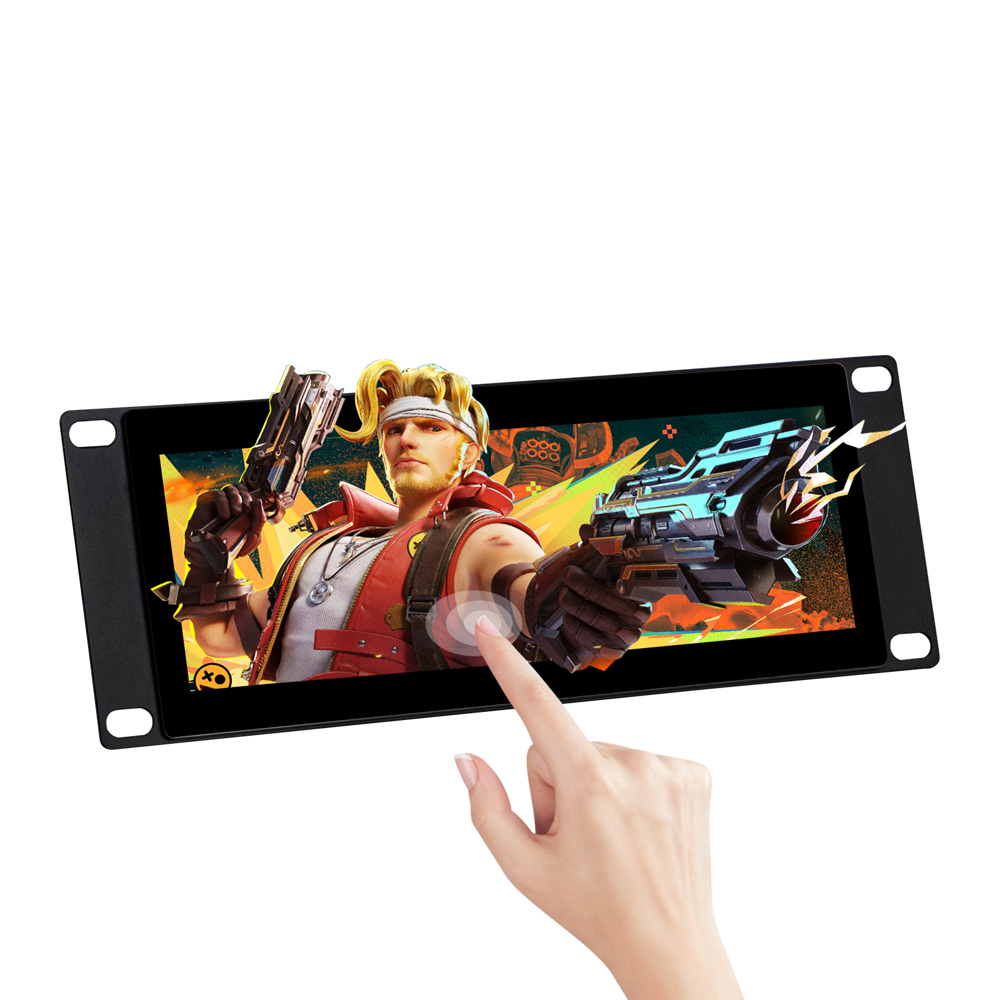
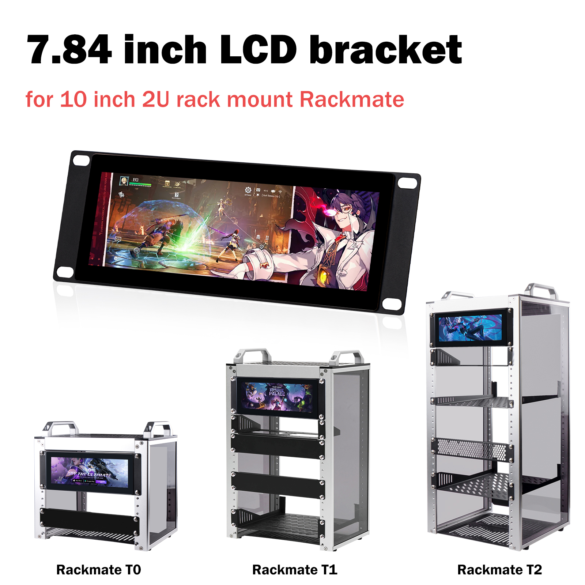
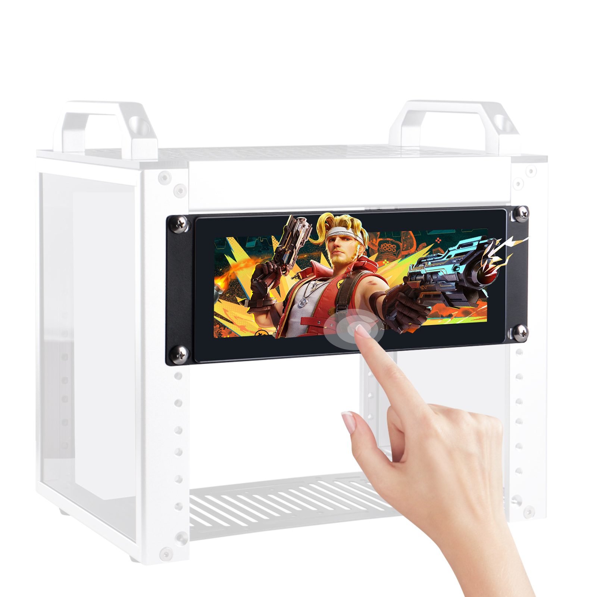
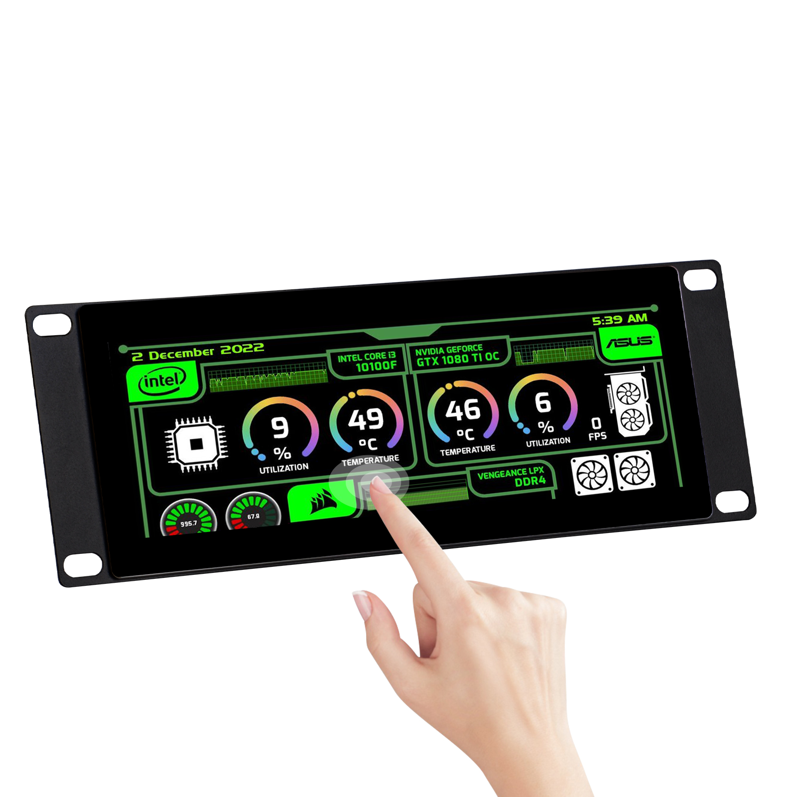
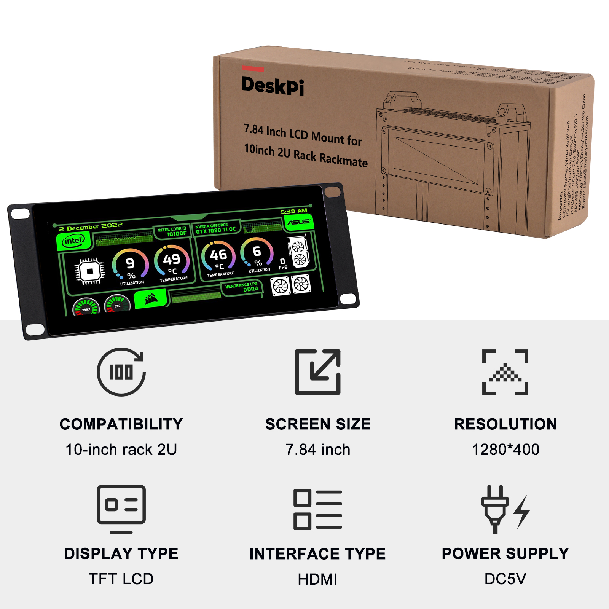
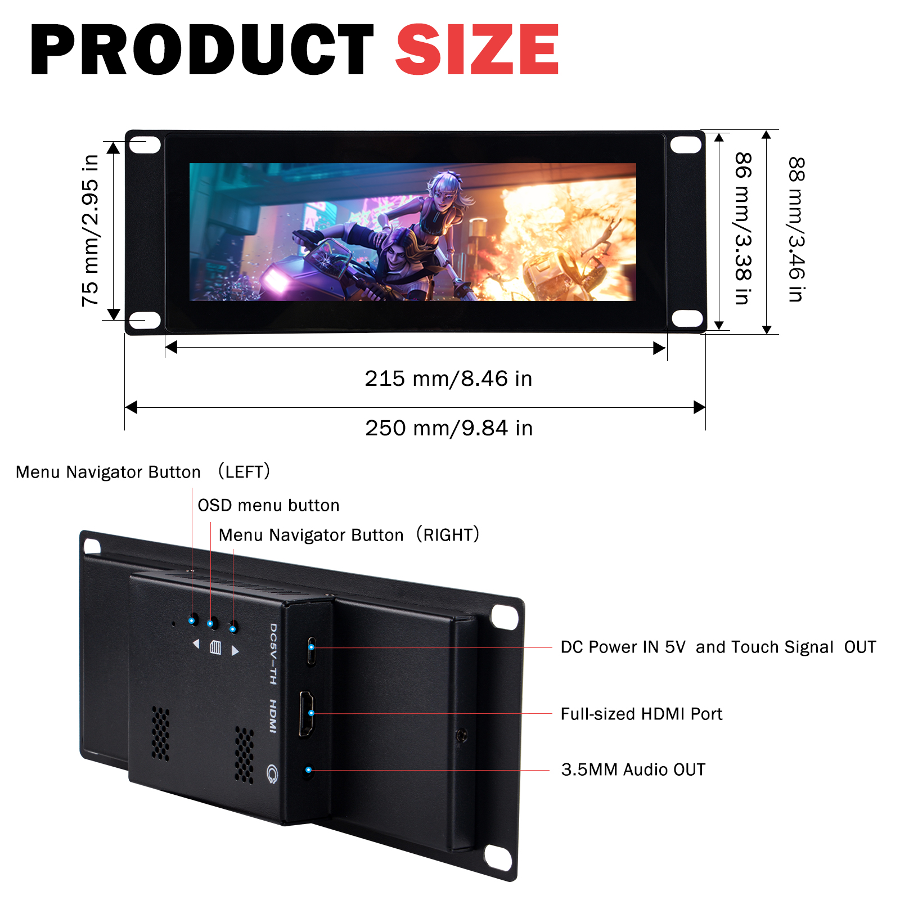
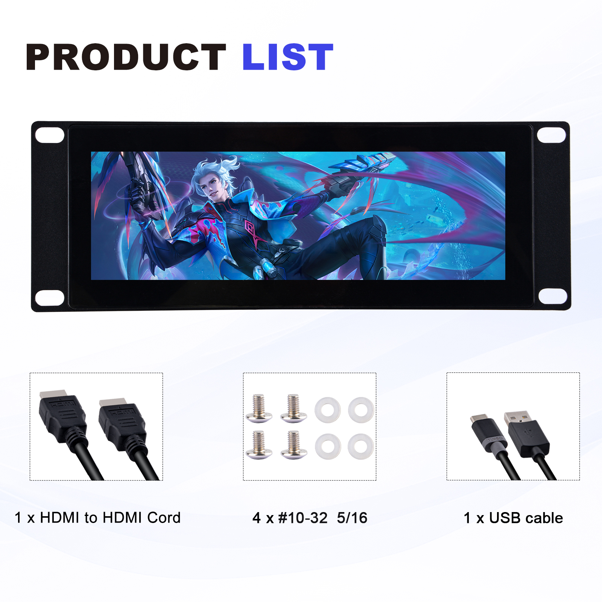
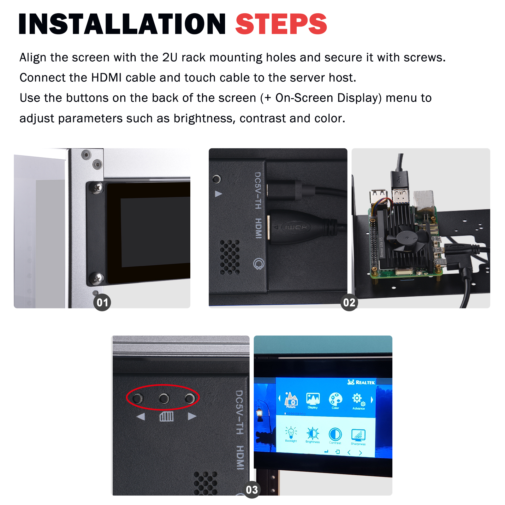
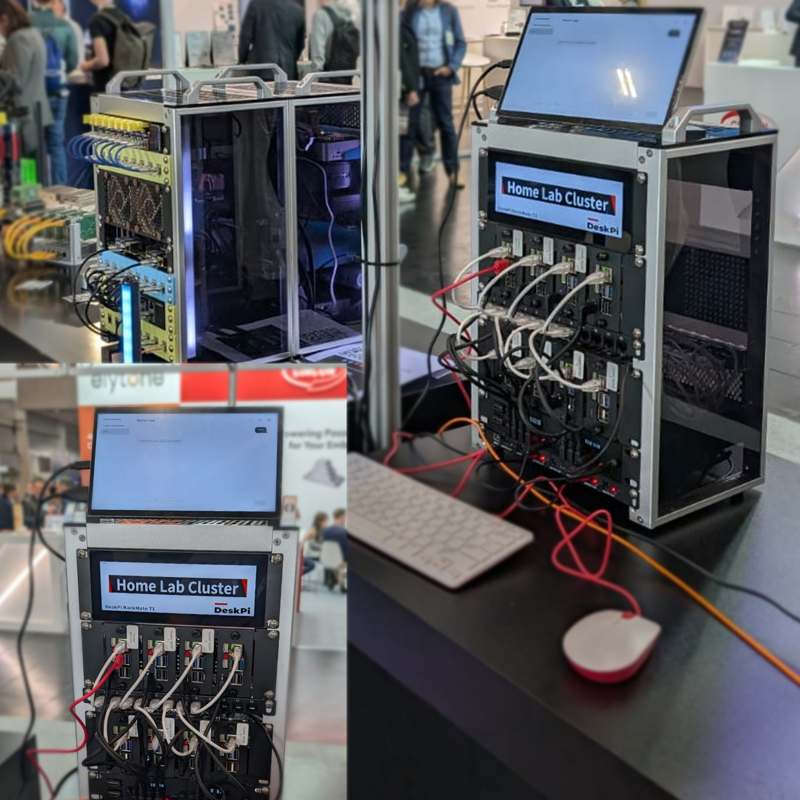
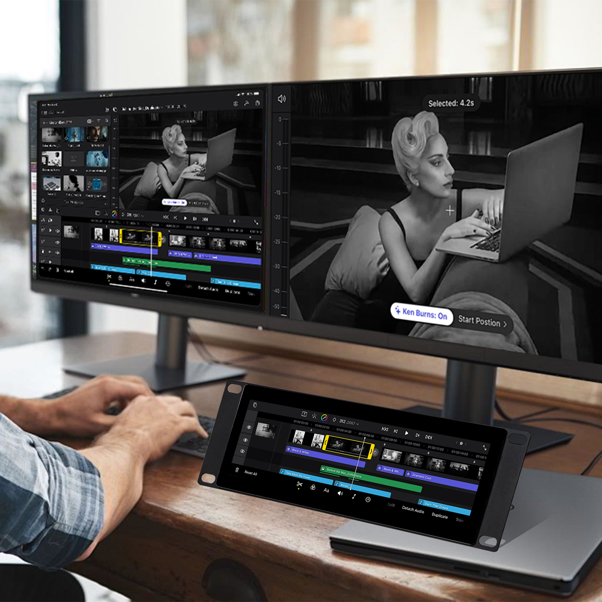

DeskPi 7.84 inch LCD Mount for 10 inch 2U Rackmate (DP-0059)
The DeskPi 7.84 inch LCD Mount is a 10-inch 2U rack-mount display panel designed for the DeskPi Rackmate series. It combines a high-resolution TFT LCD with a multi-touch screen, built-in OSD menu, and multi-language support, making it an ideal plug-and-play monitor for server racks, home labs, cluster dashboards, and maintenance consoles.

Purchase URL
- Official Store: DeskPi 7.84 inch Touch Screen for 10 inch 2U Rackmate
- US Amazon: https://www.amazon.com/dp/B0F3C5R2BZ
- UK Amazon: https://www.amazon.co.uk/dp/B0F3C5R2BZ
- DE Amazon: https://www.amazon.de/dp/B0F3C5R2BZ
- FR Amazon: https://www.amazon.fr/dp/B0F3C5R2BZ
- IT Amazon: https://www.amazon.it/dp/B0F3C5R2BZ
- ES Amazon: https://www.amazon.es/dp/B0F3C5R2BZ
- JP Amazon: https://www.amazon.jp/dp/B0F3C5R2BZ
- AU Amazon: https://www.amazon.com.au/dp/B0F3C5R2BZ
Key Features
- 7.84 inch TFT LCD with a resolution of 1280 x 400, 350 cd/m² brightness, and 60 Hz refresh rate.
- Capacitive multi-touch screen — plug and play, no extra driver installation required.
- Standard 2U form factor for 10-inch racks, compatible with DeskPi Rackmate T0 / T1 / T2 series.
- HDMI video input + USB touch-signal output for easy connection to a server host or SBC.
- Built-in OSD menu with multi-language support for adjusting brightness, contrast, color, sharpness, backlight, and more.
- 3.5 mm audio output for connecting external speakers or headphones.
- DC 5V power input via a standard USB-C power/touch combo port.
- Durable metal bracket with pre-drilled mounting holes for quick rack installation.
Specifications
| Item | Specification |
|---|---|
| Product SKU | DP-0059 |
| Screen Size | 7.84 inch |
| Panel Type | TFT LCD |
| Resolution | 1280 x 400 |
| Brightness | 350 cd/m² |
| Refresh Rate | 60 Hz |
| Touch Type | Capacitive multi-touch |
| Video Input | Full-size HDMI |
| Touch Output | USB (shared with DC 5V input port) |
| Audio Output | 3.5 mm stereo |
| Power Supply | DC 5V |
| Mounting | 10-inch 2U rack mount (Rackmate T0 / T1 / T2) |
| Product Dimensions | 250 mm x 88 mm / 9.84 in x 3.46 in |
| Active Display Area | 215 mm x 75 mm / 8.46 in x 2.95 in |
Gallery
Product Overview

The DP-0059 display panel fits perfectly into the 2U front opening of Rackmate T0, T1, and T2 cabinets.



Product Size & Interfaces

Rear I/O (from top to bottom):
- DC 5V IN / Touch Signal OUT — USB-C combo port for power and touch data.
- Full-size HDMI Port — video input from the host device.
- 3.5 mm Audio OUT — external audio output.
OSD buttons on the rear:
- Menu Navigator Button (LEFT) — navigate up / decrease value.
- OSD Menu Button — open / close the OSD menu.
- Menu Navigator Button (RIGHT) — navigate down / increase value.
Package Contents

Installation Steps

- Align the display with the 2U rack mounting holes and secure it with the included screws.
- Connect the HDMI cable from the host to the display, and connect the USB cable for touch and power.
- Press the OSD buttons on the rear to adjust brightness, contrast, color, and other display parameters.
Application Scenarios


The 7.84 inch LCD panel is widely used as a server-status monitor, home-lab dashboard, cluster console, touch control panel, and secondary display for video editing or live-streaming workflows.
How to Install
- Mount the panel:
- Place the DP-0059 panel against the 2U opening on the front of your Rackmate cabinet.
-
Use the four included #10-32 5/16 screws and washers to fasten the panel.
-
Connect video:
-
Plug the included HDMI-to-HDMI cable between the host device and the display.
-
Connect touch and power:
- Plug the included USB cable into the DC 5V / Touch port on the display.
-
Connect the other end to a 5V USB power source or a USB port on the host device.
-
Power on:
- Once power and HDMI are connected, the display will light up automatically.
- The touch screen is recognized as a standard HID device — no driver installation is required.
OSD Menu Operation
The on-screen display (OSD) menu lets you fine-tune the picture quality and language settings.
- Press the OSD Menu Button to open the OSD.
- Use the LEFT / RIGHT Navigator Buttons to move through menu items or adjust values.
- Available options include:
- Picture — brightness, contrast, sharpness, backlight
- Display — horizontal / vertical position, phase, clock
- Color — color temperature, saturation, hue, red/green/blue gain
- Advance (Advanced) — reset, language, transparency, and other advanced settings
- The OSD supports multi-language menus; select your preferred language under Advance (Advanced).
Package Includes
- 1 x DeskPi 7.84 inch LCD Mount (DP-0059) Pack
Note: A 5V power adapter is not included. Please use a standard USB 5V/2A or higher power source.
Display Resolution Note
⚠️ macOS users: the screen image may appear stretched because macOS cannot output 1280 x 400 natively. The minimum supported resolution on macOS is typically 1280 x 720.
On a Mac, the display will usually be driven at a 16:9 resolution (such as 1280 x 720) and then scaled or letterboxed, which can cause horizontal stretching. For the best picture quality, set a custom resolution of 1280 x 400 via a third-party display utility (for example, SwitchResX or RDM) or adjust the overscan/scaling options in System Settings > Displays.
Notes
- Make sure the host device outputs a resolution compatible with the panel. The recommended resolution is 1280 x 400.
- If the touch function does not respond, verify that the USB cable is connected to the DC 5V / Touch Signal OUT port and that the host recognizes the USB HID device.
- Avoid pressing the screen with excessive force or using sharp objects on the touch surface.
- For rack installation, ensure the cabinet is powered off before connecting cables to the host device.
Related Products
For more DeskPi product documentation, visit the DeskPi Products Wiki.